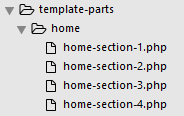
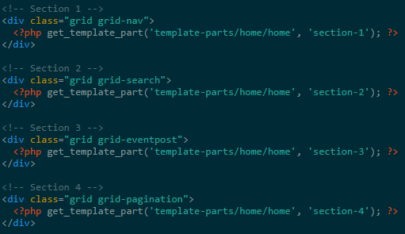

Index.php
In most Banana Wordpress projects, landing page or home page is a static page consisting of sections. To increase readability in index.php, every sections contained by index.php should be separated into template parts.
E.g
 This promotes collaborative work in Team Banana, because most of the project workload in "most" projects is heavy on this page. Separating it into sections will make it easy for others to help.
Before you do anything else to index.php, there is one configuration you need set in Wordpress Admin Dashboard
- Set Setting > Reading > Front page display to "your-latest-posts"